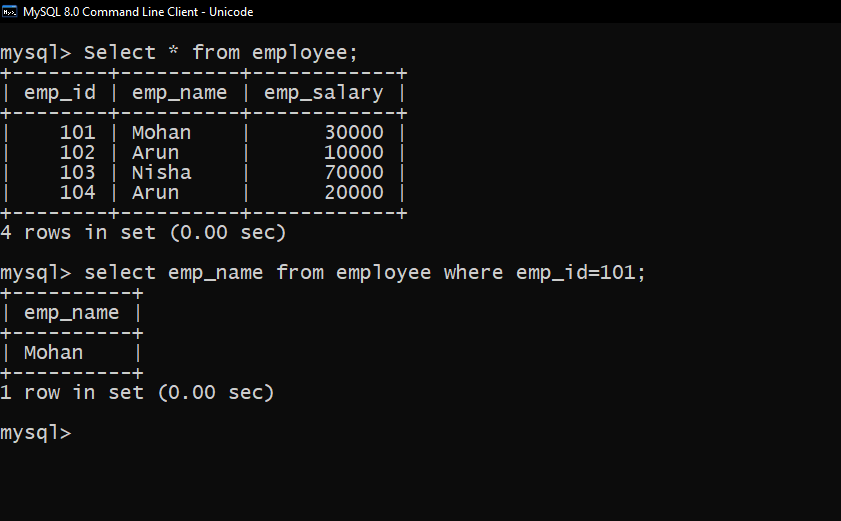

Relational operator when Being conditional takes two expressions, makes a useful comparison, and returns either True or False. It does the operations such as equal to, lesser than, greater than, or greater than similar to and other advanced concepts. This Operator joins their hands with the ‘where’ clause to select the particular columns in the records.
Syntax Of Relational Operator
Mysql> SELECT column FROM table WHERE condition1 Relational Operator condition2;
Types of Relational Operator
1. Equal to (=)
2. Not equal (<>)
3. Greater than (>)
4. Greater than equal to (> =)
5. Lesser than (<)
6. Lesser than or Equal to (<=)
1. Equal to (=): This Operator checks whether the value of the two operands is the same. If it is equal, it returns true; if not, it returns false.
Example of equal to operator

2. Not equal (<>) : It verifies whether the two operands’ values are equal or not. If they are not identical, then the statement returns True.
Example of Not equal operator
3. Greater than : It is used in SQL to check for the more significant value between two operands.
Example of Greater than operator
4. Greater than equal to : It is used in SQL to check for the greater than or equal to a value between two operands.
Example of Greater than equal to operator
r>
5. Lesser than : This Operator in SQL checks whether a left operand is lesser than the right operand. If it is true, it results in the result.
Example of Lesser than operator
6. Lesser than or Equal to : This Operator in SQL checks whether a left operand is lesser than or equal to the right operand. If it is true, it results in the result.